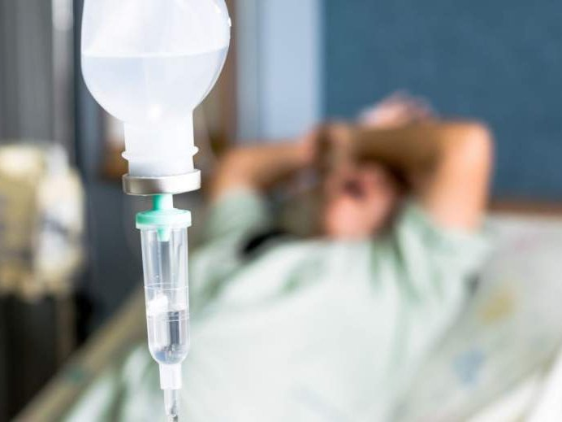

+380(97) 369 76
65
+380(97) 369 76
65Вывод из запоя Одесса
Инновационные методы которые мы используем всегда приносят стабильные результаты с выводом пациентов из запоя
Работаем в Одессе, Киеве, Львове, Харькове, Днепре, Запорожье


Бесплатная консультация, работаем круглосуточно 24/7
Инновационные методы которые мы используем всегда приносят стабильные результаты с выводом пациентов из запоя
Работаем в Одессе, Киеве, Львове, Харькове, Днепре, Запорожье
Запой — это патологическое состояние, при котором человек не всегда может остановиться самостоятельно без медицинской помощи. Это состояние сопровождается неконтролируемым желанием пить алкоголь, что часто приводит к тяжелым последствиям — от передозировки до серьёзных заболеваний, таких как печёночная кома.
Выйти из запоя можно как самостоятельно, так и с помощью врачей. Вот несколько советов, которые могут помочь:
Важно помнить, что выход из запоя может быть опасен, особенно если он был продолжительным. В таких случаях медицинская помощь необходима.
Лечение в стационаре — это наиболее безопасный и эффективный способ выхода из запоя. Пациент находится под постоянным наблюдением врачей, что минимизирует риск осложнений. Плюсом является и то, что наркологические центры, как правило, закрытого типа, что исключает возможность употребления алкоголя.
Процесс лечения включает несколько этапов. Вначале проводится первичное обследование, в ходе которого врач оценивает состояние пациента, собирает анамнез и назначает анализы — это могут быть анализы крови, электрокардиограмма, УЗИ печени и другие исследования. Следующим этапом становится детоксикация, то есть введение лекарственных препаратов, которые способствуют выведению токсинов. Это обычно делается с помощью капельниц, в состав которых входят солевые растворы, витамины и другие медикаменты. Медикаментозная терапия включает в себя седативные препараты, которые помогают снизить тревожность и предотвратить судороги, а также витамины и микроэлементы, такие как магний.
Для поддержки внутренних органов назначаются препараты, улучшающие работу печени, почек и сердечно-сосудистой системы. Психологическая помощь в виде консультаций с психологом или психотерапевтом помогает стабилизировать эмоциональное состояние пациента. В процессе лечения уделяется внимание правильному питанию и гидратации — пациенту обеспечивают достаточное количество жидкости и сбалансированное питание. Врач следит за состоянием пациента, регулярно проверяя его давление, пульс, температуру и другие показатели. По завершении стационарного лечения врач даёт рекомендации по дальнейшему наблюдению, чтобы минимизировать риск рецидива. Часто в это входят амбулаторные консультации, участие в группах поддержки и длительная психотерапия.
Вывод из запоя на дому возможен, но требует участия опытного нарколога. Наши специалисты имеют опыт работы в реанимационных отделениях, что гарантирует безопасность пациента.
Вывод из запоя на дому возможен, однако требует участия опытного врача-нарколога. В нашем центре выездные врачи — это специалисты с опытом работы в реанимационных отделениях или на скорой помощи, что гарантирует безопасность пациента. Процесс начинается с приезда врача, который осматривает пациента, оценивает его состояние и проводит консультацию. Далее устанавливается капельница с детоксикационными препаратами, витаминами и лекарствами, восстанавливающими организм. Также возможно проведение психотерапевтических консультаций. После этого пациент продолжает лечение с помощью таблетированных препаратов под наблюдением наших специалистов.
Хотя выход из запоя самостоятельно возможен, он требует серьёзного подхода. Вот подробный план действий:
Важно помнить, что выход из запоя самостоятельно может быть опасен, особенно если запой был длительным. В таких случаях настоятельно рекомендуется обратиться за профессиональной медицинской помощью.
Стоимость зависит от выбранных методов лечения, например, использование капельниц или других процедур. Длительность лечения также играет роль: если требуется длительное пребывание в стационаре для полного отказа от алкоголя и восстановления здоровья, это отразится на общей стоимости. Дополнительные процедуры и медикаменты, такие как витамины или психологическая помощь, могут увеличить итоговую цену. Также стоимость может зависеть от региона.
Анонимно

"Никакими усилиями самостоятельно я не смогла преодолеть запой, и наступала ломка, сопровождаемая повышенным давлением и пульсом. Тогда я решила обратиться за помощью в клинику. Врачи оказали мне неоценимую поддержку! Уже прошел месяц, и я не только не употребляю алкоголь, но даже не испытываю к нему желания!"
Анонимно
"Могу с уверенностью порекомендовать данный центр для тех, кто ищет помощь при выводе из запоя. Я неоднократно обращался к ним и могу сказать, что цена соответствует качеству услуг. После проведения капельницы в клинике, вся тяга к алкоголю проходит, и я чувствую себя гораздо лучше. Это действительно эффективный метод, и я благодарен клинике за их профессионализм и заботу!"
Анонимно
"Я очень благодарен за то, что вы помогли мне разобраться с моей проблемой алкоголизма и найти ее решение. Давно осознавал, что без помощи профессионалов я не справлюсь, и я не ошибся, выбрав ваш центр Амбрелла. Здесь действительно предоставляется профессиональная помощь, которая оказалась для меня реальным спасением. Огромное спасибо за вашу поддержку и заботу!"
Анонимно
"Неоднократно я пытался бросить алкоголь самостоятельно, но каждый раз уговаривал себя продолжать. Я сначала ограничивался одной бутылкой в день, потом двумя, и в итоге вновь попадал в запой. Но в итоге, я смог прекратить употребление алкоголя только после того, как обратился в центр Амбрелла и заказал у них услугу вывода из запоя. Уже не пью 3 месяца и удалось полностью восстановиться. Благодарю врача который меня вел - Алексея Валерьевича"
Анонимно
"Здравствуйте! Я хотел бы выразить свою искреннюю благодарность клинике за быстрое и профессиональное освобождение моего мужа пивного рабства! Ранее у меня уже не было никаких надежд на его выздоровление. Однако, благодаря вашим перспективным методам лечения, мы теперь идем к полному отказу от алкоголя. Вы дали нам новую надежду и оказали неоценимую помощь! Спасибо вам за все!"
Анонимно
"Я долгое время страдал от запоев и не мог справиться с этой проблемой. Однако, когда я обратился в этот центр, они быстро помогли мне вернуться на ноги, и самое главное - предоставили мне возможность не возвращаться к запоям. Уже почти полгода я не испытываю запоев! Это для меня настоящее чудо, я никогда не думал, что смогу так преодолеть свои проблемы. Большое спасибо центру Амбрелла!"
Анонимно
"Благодарю ваш центр Амбрелла за оперативное и высококачественное лечение! Женский алкоголизм - это настоящее горе, с которым невозможно справиться в одиночку. Я уже потеряла надежду, но благодаря вашей помощи, она вернулась ко мне! Отдельная благодарность врачу Станиславу Вячеславовичу, а также благодарность Богу за то, что он послал мне такое чудо как ваша центр! Спасибо вам всем!"
Анонимно
"Хочу выразить благодарность врачу Владиславу Алексеевичу за то, что вы избавили меня от этого ужаса. Я уже был в отчаянии, перепробовал множество клиник и центров, но только здесь я наконец получил настоящую помощь! Алкоголь полностью разрушил меня, и если бы не ваша помощь, я, возможно, уже не был бы жив. С вами я смог вернуть себе жизнь и буду благодарен вам всегда!"
Приезд в течении 60 минут от момента поступления заявки
Наши филиалы есть во всех больших городах Украины.
Мы оказываем профессиональную доказательную медицинскую помощь. Гарантией является наше имя.
Номер телефона:
+380 (97) 369 76 65
+380 (50) 021 69 57
Адрес главного офиса: г. Одесса Армейская 18/1
Офис вашего города нужно уточнить
Работаем в: Одессе, Киеве, Львове, Харькове, Днепре,
Запорожье
Telegram: t.me/umbrellaplus
График работы: Круглосуточно